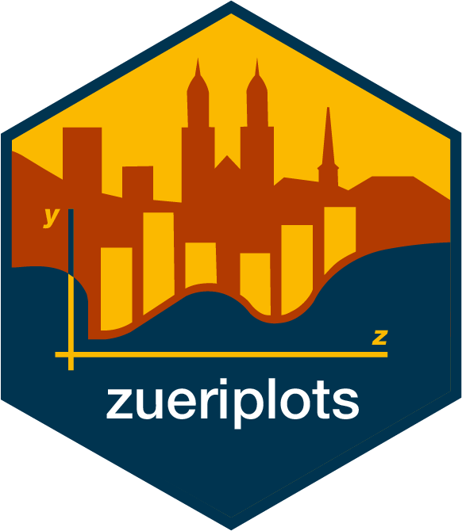

The goal of this repository is to provide minimal code examples for ggplot2 graphics that conform to the corporate identity/design of the city of Zurich. Most of the required styling is done by zueritheme, while the zuericolors package provide the official color palettes.
Note that this is an R package only for documentation purposes, it does not provide any exported functions.
Overview
The ssz_theme(...) function from the zueritheme package provides most of the styling. However, in order for ggplot2 graphics to conform to the corporate design, a few manual steps are still necessary. These steps will be explained below.
Before you can start, you have to install zueritheme and zuericolors as well as Zurich’s official font HelveticaNeueLTPro (only available for city employees).
Further below you can find code examples of the most commonly used graph types.
Installing the required packages from the zueriverse
Install zuericolors from GitHub
# install.packages("pak")
pak::pak("StatistikStadtZuerich/zuericolors")Install zueritheme from GitHub
# install.packages("pak")
pak::pak("StatistikStadtZuerich/zueritheme")Installing the font
The following instructions are intended for employees of the city of Zurich working on a Windows computer. Instructions for other operating systems are currently not available.
HelveticaNeueLTPro must be ordered in the software center and installed on your computer. To make it available, it is important to copy the font-related files from C:\Program Files\Common Files\Adobe\Fonts to c:\windows\Fonts. The font’s system path will then be used in the font_add() function from the showtext package in order to import the font and make it accessible for R. family is the parameter that will be used when plotting within the ssz_theme() function.
# install.packages("rappdirs")
# install.packages("showtext")
library(extrafont)
library(rappdirs)
path_to_font <- file.path(user_config_dir(roaming = FALSE, os = "win"), "Microsoft", "Windows", "Fonts")
font_add(family = "Helv",
regular = file.path(path_to_font, "HelveticaNeueLTPro-Roman.ttf"),
bold = file.path(path_to_font, "HelveticaNeueLTPro-Hv.ttf"))
showtext_auto()
showtext_opts(dpi = 300)Before creating a graphic, it is recommended to invoke showtext_auto() so that the graphic text is rendered using showtext. The resolution of the graphic is controlled by using showtext_opts(dpi = 300).
Additional Manual Styling
The ssz_theme(...) function does not take over all styling tasks that the CI/CD of the city of Zurich prescribes. Namely, the position of the axis titles as well as the spacing for the ten thousand numbers (see picture below) still need additional manual adjustment.
Axis Titles
In ggplot2 the axis titles are positioned relative to the axis tick labels. For zueritheme this means that e.g. the y-axis titles are positioned at the top left of the y-axis, right-justified at the axis tick labels.

Since the position of the axis titles therefore depends on the scaling (or length of strings if categories) of the displayed variable, the title must be positioned with margin(r = ...) in addition to the theme() function in order to conform to the corporate design. The axis title should be right-justified and aligned with the axis labels. In the example below we set the right-margin to -27.
ggplot(...) +
geom_bar(...) +
ssz_theme(grid_lines = "y") +
theme(axis.title.y = element_text(
margin = margin(t = 0, r = -27, b = 0, l = 0)
))The value of the right margin of the axis title for this example should be adjusted to -27 so it looks something like this:
Spacing for the Ten Thousand Numbers
In order to get a nice spacing for the ten thousand numbers, we need to format the labels with big.mark = " " when applying the scale_y_continuous function (or scale_x_continuous if numeric values are shown on the x axis).
ggplot(...) +
geom_bar(...) +
scale_y_continuous(labels = function(x) format(x,
big.mark = " ",
scientific = FALSE),
...) +
ssz_theme(grid_lines = "y")Different plot types
Example code for the most commonly used graphic types at Statistik Stadt Zürich is provided below.
Bar Chart

Stacked Bar Chart
You can find the R code for this graphic here.
Grouped Bar Chart
You can find the R code for this graphic here.
Pyramid Chart
You can find the R code for this graphic here.

Boxplot Chart
You can find the R code for this graphic here.
Line Chart
You can find the R code for this graphic here.
Area Chart
You can find the R code for this graphic here.

Pie Chart
You can find the R code for this graphic here.
Note: Pie charts are usually used to show the relationship between parts and the whole of a data set, i.e. how big part A is in relation to part B, C, etc. The problem with pie charts is that they force us to compare areas (or angles), which is often quite difficult to do. Furthermore, pie charts are only used when manageable number of groups are to be compared and these groups are easily distinguishable by color.
We recommend using an alternative chart type if possible.

Doughnut Chart
You can find the R code for this graphic here.
Heatmap Chart
You can find the R code for this graphic here.
Ridgeline Chart
You can find the R code for this graphic here.
Map Chart
You can find the R code for this graphic here.
Getting Help
If you encounter a bug, please contact statistik@zuerich.ch.